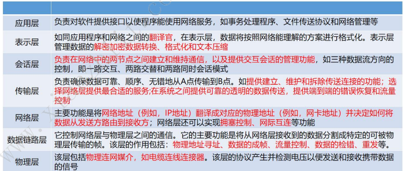

# 信息技术及其发展
上午题 2-3 分
# 计算机网络 *
从作用范围可划分为：
- 个人局域网（PAN)
- 局域网 (LAN)
- 城域网 (MAN)
- 广域网 (WAN)
- 公用网 ()
- 专用网
# OSI 七层网络模型 *

# IEEE 802 协议族 *
IEEE 802 规范包括：
- 802.1：802 协议概论
- 802.2：逻辑链路控制层
- 802.3：以太网的 CSMA/CD 载波监听多路访问 / 冲突检测协议，重要的局域网协议
- 802.4：令牌总线 Token Bus 协议
- 802.5：令牌环 Token Ring 协议
- 802.6：城域网 MAN 协议
- 802.7：FDDI 宽带技术协议
- 802.8：光纤技术协议
- 802.9：局域网上的语音 / 数据集成规范
- 802.10：局域网安全互操作标准
- 802.11：无线局域网 WLAN 标准协议
# TCP/IP*
TCP/IP 是 Internet 的核心
# 应用层协议 *
- FTP：文件传输协议
- TFTP：简单文件传输协议
- HTTP：超文本传输协议
- SMTP：简单邮件传输协议
- DHCP：动态主机配置协议
- Telnet：远程登陆协议
- DNS：域名系统
- SNMP：简单网络管理协议
# 传输层协议 *
- TCP: 可靠，面向连接，传输数据量少
- UDP：不可靠，无连接，检错弱，适合传输大量数据
# 网络层协议 *
处理信息的路由和主机地址解析
- IP：无连接，不可靠
- ICMP（网络控制报文协议）：
- IGMP（网络组管理协议）：
- ARP (地址解析协议)
- RARP（反向地址解析协议）
# 软件定义网路 *（SDN）
一种新型网络创新架构，将数据与控制分层
由下到上分别是数据平面 -（--》FlowTable 协议 ---》）控制平面和应用平面
# 计算机网络 *
# 第五代移动通信技术 5G*
特点：高速率，低时延，大连接，同时支持中低频和高频频段
三大应用场景：
- 增强移动宽带（eMBB)
- 超高可靠低时延通信（uRLLC）
- 海量机器类通信（mMTC)
# 存储和数据库
# 存储技术 *
根据服务器类型分：
- 封闭系统的存储
- 开发系统的存储
- 内置存储
- 外挂存储
- 直连式存储（DAS）
- 网络化存储（FAS）
- 网络接入存储 (NAS)
- 存储区域网络（SAN)
# 网络存储技术
- DAS：直连模式，不易扩展
- NAS：有自的文件系统，可以用 TCP/IP 作为其网络传输协议，文件共享存取方式
- SAN：是块级存储，不是文件共享方式
# 存储虚拟化 *
是 “云存储” 的核心技术之一
存储虚拟化使存储设备能够转换为逻辑数据存储
# 绿色存储 *
目的：节能环保
# 数据结构模型 *
数据结构模型是数据库系统的核心
常见有三种：
- 层次模型：树结构（最早使用）
- 网状模型：网状结构
- 关系模型：二位表格
层次模型和网状模型又统称格式化模型
# 两种常见数据库类型 *
关系数据库：遵循 ACID 原则 即：
- 原子性
- 一致性
- 隔离性
- 持久性
优点：容易理解，使用方便，易于维护
非关系数据库：分布式，非关系型，不保证遵守 ACID 原则
优点：高并发，基本支持分布式，简单，易于扩展，可伸缩
缺点：事物支持较弱，通用性差，无完整越苏，复杂业务场景支持较差
常见的非关系数据库有：
- 键值数据库：简单，易部署，高并发
- 列存储数据库：通常来应对分布式存储海量数据
- 面向文档数据库：键值数据库升级版
- 图形数据库：
# 数据仓库 *
数据仓库是一个面向主题的、集成的、非易失的且随时间变化的数据集合，用于管理决策。
基本概念：
- 清洗 / 转换 / 加载：
- 元数据
- 粒度：细化程度越高，粒度级越小；越小，越大
- 分割；
- 数据集市
- 操作数据存储
- 数据模型
- 人工关系：
数据仓库系统结构的四个层次：
- 数据源
- 数据的存储与管理
- OLAP 服务器
- 前端工具
数据源是基础，数据的存储与管理是核心。
# 信息安全
# 数据的三种安全属性
- 保密性：信息不被未授权者知晓
- 完整性：信息是正确的、真实的、未被篡改的、完整无缺的属性
- 可用性：信息可以随时正常使用的属性
# 信息系统安全的四个层级
- 设备安全
- 数据安全：静态安全，传统的信息安全
- 内容安全：内容保密，信息隐私保护
- 行为安全：动态安全
# 加密解密 *
加密的两个元素：
- 算法
- 密钥
- 对称密钥：对称加密（私人密钥加密）
- 非对称密钥：非对称加密（公开密钥加密）
非对称加密 RSA，加密密钥公开，解密密钥保密
# 安全行为分析技术 *
用户和实体行为分析（UEBA) 系统包括：
- 数据获取层
- 算法分析层
- 场景应用层
# 网络安全态势感知 *
是一种基于环境的、动态的、整体的洞悉安全风陷的能力
关键技术主要包括：
- 改良多元异构数据的护具融合技术
- 面向多累型的网络安全威胁评估技术
- 网络安全态势评估与决策支撑技术
- 网络安全态势可视化
# 新一代信息技术及应用
# 物联网 *
物联网的三层架构：
- 感知层：RFID 射频技术
- 网络层
- 应用层
物联网的关键技术：
- 传感器技术
- 传感网
- 应用系统框架
# 云计算 *
是分布式计算的一种
根据资源层次分为：
- 基础设施即服务（IaaS)
- 平台即服务（Pass）
- 软件即服务（SaaS)
关键技术：
- 虚拟化技术
- 云存储技术
- 多租户和访问控制管理
- 云安全技术
# 大数据 *
特征：
- 海量数据
- 数据类型多样
- 数据价值密度低
- 数据处理速度快
关键技术：
- 大数据获取技术
- 分布式数据处理技术
- 大数据管理技术
- 大数据应用和服务技术
# 区块链 *
分类：
- 公有链
- 联盟链
- 私有链
- 混合链
特征：
- 多中心化
- 多方维护
- 时序数据
- 不可篡改
- 开放共识
- 安全可信
关键技术：
- 分布式账本
- 加密算法
- 共识机制
# 人工智能 *
关键技术：
- 机器学习
- 自然语言处理
- 专家系统
# 虚拟现实 *
特征：
- 沉浸性
- 交互性
- 多感知性
- 构想性 / 想象性
- 自主性
关键技术：
- 人机交互技术
- 传感器技术
- 动态环境建模技术
- 系统集成技术